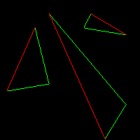
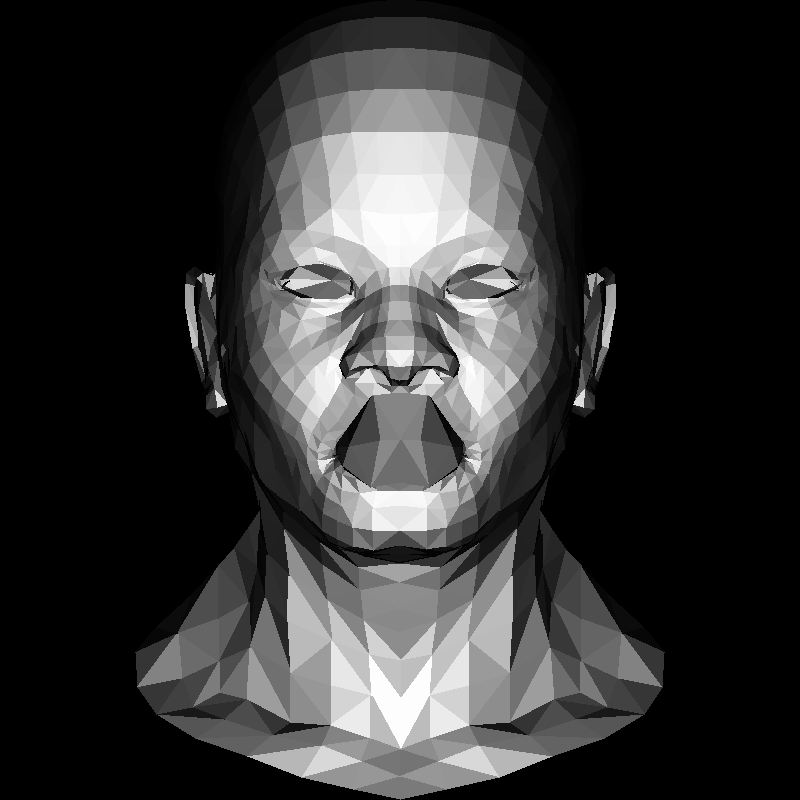
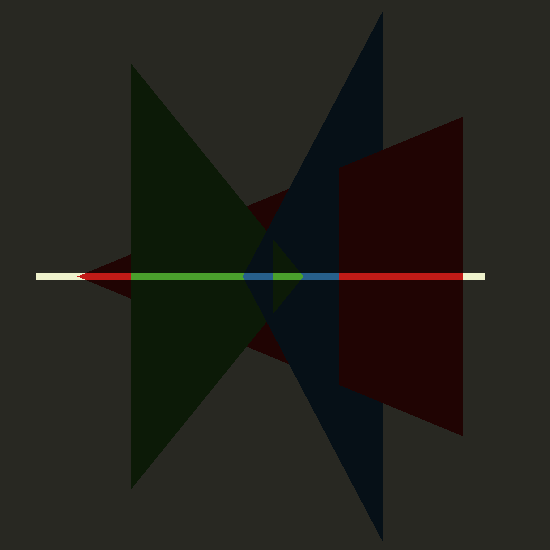

Introduction
tinyRenderer笔记-lesson1
最简单的画线实现
- 简单步进, 划分100，每次步进一点点，最后画条线

- 问题：低效，依赖于步进长度，如果线很长，步进长度短会出现大裂缝(采样不足)

#![allow(unused)] fn main() { void line(int x0, int y0, int x1, int y1, TGAImage &image, TGAColor color) { for (float t=0.; t<1.; t+=.01) { int x = x0 + (x1-x0)*t; int y = y0 + (y1-y0)*t; image.set(x, y, color); } } }
second
- 步进长度其实很容易得到，这里用x的的步进作为实际步进长度，但是这有错误(erroneous)
- 计算当前步进比例
t y = y0 + (y1 - y0) * t- 问题：一条线正常，另一条有洞，没有第三条线
- 第一条和第三条，是相同两条线，只是颜色不同，方向不同，目前处理不了

- 第一条和第三条，是相同两条线，只是颜色不同，方向不同，目前处理不了
#![allow(unused)] fn main() { void line(int x0, int y0, int x1, int y1, TGAImage &image, TGAColor color) { for (int x=x0; x<=x1; x++) { float t = (x-x0)/(float)(x1-x0); int y = y0*(1.-t) + y1*t; image.set(x, y, color); } } line(13, 20, 80, 40, image, white); line(20, 13, 40, 80, image, red); line(80, 40, 13, 20, image, red); }
third
- 上面红线有洞是因为，纵向y比横向x大，导致采样不足，需要哪个大用哪个作为步进长度，这里的操作是如果steep，交换x和y，
- 然后保证前后两点前面的x比后面的小，就是大了就交换一下
- 问题：到这里为止已经基本能保证画线的需求，但是效率不高

#![allow(unused)] fn main() { void line(int x0, int y0, int x1, int y1, TGAImage &image, TGAColor color) { bool steep = false; if (std::abs(x0-x1)<std::abs(y0-y1)) { // if the line is steep, we transpose the image std::swap(x0, y0); std::swap(x1, y1); steep = true; } if (x0>x1) { // make it left−to−right std::swap(x0, x1); std::swap(y0, y1); } for (int x=x0; x<=x1; x++) { float t = (x-x0)/(float)(x1-x0); int y = y0*(1.-t) + y1*t; if (steep) { image.set(y, x, color); // if transposed, de−transpose } else { image.set(x, y, color); } } } }
Timings: fourth attempt
- 由于使用bevy实现上面的图像，导致这里的benchmark没法做
- 只做了阅读理解
- 目前代码有太多的
除法 - 没有做assets和check on going beyond the borders，就是需要
错误处理和边界判断 - 优化很危险，应该清楚理解代码会运行的平台。是在优化
graphics card或者just for CPU，这两者完全不同。 - 代码需要
profiled - 经过测试，
10%在copy color，70%在调用上面的画线程序，这里就是需要优化的部分
- 目前代码有太多的
Fourth attempt continued
- 每一次除法，都有相同的除数
(x1 - x0)，拿到外边 - 设立一个error variable，告诉我the distance to the best straight line from out current (x,y) pixel,we increase (or decrease) y by one, and decrease the error by one as well。
- 个人理解，首先for循环是
步进dx的长度，所以derror是dy / dx，也就是对于每次前进一次x，应该前进多少y,而这里y是int形，所有只有在error > .5的时候，y需要增加步进长度，这里为啥就不太清楚了，有点像是四舍五入，或者是某种数值计算优化，然后error会自己减掉一次步进长度因为这个步进长度已经被y使用了
- 个人理解，首先for循环是
- 由于没有
除法，line的效率和set Image的效率差不多了
#![allow(unused)] fn main() { void line(int x0, int y0, int x1, int y1, TGAImage &image, TGAColor color) { bool steep = false; if (std::abs(x0-x1)<std::abs(y0-y1)) { std::swap(x0, y0); std::swap(x1, y1); steep = true; } if (x0>x1) { std::swap(x0, x1); std::swap(y0, y1); } int dx = x1-x0; int dy = y1-y0; float derror = std::abs(dy/float(dx)); float error = 0; int y = y0; for (int x=x0; x<=x1; x++) { if (steep) { image.set(y, x, color); } else { image.set(x, y, color); } error += derror; if (error>.5) { y += (y1>y0?1:-1); error -= 1.; } } } }
Timings: fifth and final attempt
- 这里
消除float的使用，添加了一个derror2，然后思路和上面其实差不多，就是整体*2dx - 这样之后
set_image操作的时长已经超过了line操作
#![allow(unused)] fn main() { void line(int x0, int y0, int x1, int y1, TGAImage &image, TGAColor color) { bool steep = false; if (std::abs(x0-x1)<std::abs(y0-y1)) { std::swap(x0, y0); std::swap(x1, y1); steep = true; } if (x0>x1) { std::swap(x0, x1); std::swap(y0, y1); } int dx = x1-x0; int dy = y1-y0; int derror2 = std::abs(dy)*2; int error2 = 0; int y = y0; for (int x=x0; x<=x1; x++) { if (steep) { image.set(y, x, color); } else { image.set(x, y, color); } error2 += derror2; if (error2 > dx) { y += (y1>y0?1:-1); error2 -= dx*2; } } } }
- 一些额外的优化
- 比如其中将
对于steep的判断，移到了for的外面，进一步降低了时间 - 并提到将
y1>y0? 1:-1也转移到for外面，也能降低时间 - 又提到现在的
编译器会做相关的优化，因而这几步操作：虽然值得有相关的意识，但现在已经没有那么必要，毕竟会降低代码的可读性和复用性
- 比如其中将
Wireframe rendering
- 这里需要下载他提供的
obj文件 - 用bevy直接读入，并
parse v和f，f是取所有的三大块里的第一小块重新组合，得注意读题... - 然后用line画出来
- 使用
bevy遇到的问题:- bevy的image的
起点在左上角，这里在左下角，画图的时候需要特殊处理 obj文件里会同时出现0点和800点，也就是当我设置图片大小是800的时候，obj文件里的800会out of index，需要特殊处理
- bevy的image的
tinyRenderer笔记-lesson2
old-school method: Line sweeping 线扫，就是一行一行画线完成一个三角形绘制
-
先使用上一次的
line绘制三角形的contour -
绘制一个三角的
好方法需要包含以下特征- simple and fust，
简单快速 - symmetrical: the picture should not depend on the order of vertices passed to the drawing function。
允许输入的三个point乱序 - two triangles have two common vertices, there should be no holes between them because of rasterization rounding，ai说是
两个三角形有共同的顶点(common vertices),不应该因为光栅化的四舍五入操作(rasterization rounding)，导致顶点之间出现了空隙(hols)TODO:说不上理解
- simple and fust，
-
传统的line sweeping，线扫描过程:- 根据y-coordinates对三个point进行排序
- 同时(simultaneously)对三角形的左侧和右侧，进行栅格化Rasterize
- 在左右边界点(boundary points)之间画一条水平线段，horizontal line segment：
-
提问：哪一个segment是左边的，哪一个是右边的- 假设有
t0,t1,t2三个点，按y ascending 排序，则boundary A 是t0-t2，boundary B 是t0-t1 和t1-t2 - 
- 这里边界
boundary A 是红色的，boundary B 是绿色的 - 目前
boundary B 是两个部分，现在要画bottom half of the triangle by cutting it horizontally，水平切一刀，切成两半，就是切两个绿线连接的那个点，将三角形分成上下两半分别绘制 - 首先画了
下三角形，但是并没有做之前line的那些操作，为了让线段连续，交换xy啥的。因为之后要做三角形的填充，而填充后就看不见线了，无所谓连续 - 然后就是上下分别填充的代码，放到一起，得到三个填充颜色后的彩色三角形

- 假设有
方法2 the method i adopt for my code
- 线扫line sweeping是针对早期单线程的cpu programming: 看一个新的pseudo-code伪代码
#![allow(unused)] fn main() { triangle(vec2 points[3]) { vec2 bbox[2] = find_bounding_box(points); for (each pixel in the bounding box) { if (inside(points, pixel)) { put_pixel(pixel); } } } }
-
输入3个点，先找出一个
包围盒（在101有讲，就是一个能包住这三个点的最小正方形）针对每一个在bounding box里的pixel，判断pixel是否在三个点组成的三角形内，如果在，put_pixel，近似于101里讲的采样方法- 离题：判断pixel是否在四边形内比较麻烦，这里不处理
-
定义重心坐标
- 101那边的定义更好理解：给定一个三角形ABC，这个三角形坐在的2维平面的任意一点都可以表示成三个顶点坐标的线性组合linear combs,只要线性组合的系数和=1
- 三角形内的任意点P，表示成：\(P=(1-u-v)A + uB + vC\)
- 文中另一个描述是：只要我们想象，放了3个重量1-u-v,u,v到点ABC上，那么三个点的重心，就在点P上。
TODO:不懂也可以说点P has coordinates(u,v)，in the (oblique) basis \((A, u\vec{AB}, u\vec{AC})\)，这里看到的就是，式子展开，可以把点A-点B看成向量AB，得到下面个式子比较自然，但是coordinates(u,v) in basis的说法没有理解- \(P = A + u\vec{AB} +v\vec{AC}\)
- 所以进一步简化，就是找\( u\vec{AB} + v\vec{AC} + \vec{PA} = \vec{0}\)
- 可以拆分成x方向和y方向的而两个equations
- \[$$ \begin{equation*} \begin{cases} u\overrightarrow{AB_{x}} & +\ u\overrightarrow{AC_{x}} +\ \overrightarrow{PA_{x}} \ =\ 0\\ u\overrightarrow{AB_{y}} & +\ u\overrightarrow{AC_{y}} +\ \overrightarrow{PAy} \ =\ 0 \end{cases} \end{equation*} $$\]
- 写成矩阵形式:
- \[$$ \begin{equation*} \begin{cases} \begin{bmatrix} u & v & 1 \end{bmatrix} & \begin{bmatrix} \overrightarrow{AB_{x}}\ \overrightarrow{AC_{x}}\ \overrightarrow{PA_{x}} \end{bmatrix} \ =\ 0\ \begin{bmatrix} u & v & 1 \end{bmatrix} & \begin{bmatrix} \overrightarrow{AB_{y}}\ \overrightarrow{AC_{y}}\ \overrightarrow{PA_{y}} \end{bmatrix} \ =\ 0 \end{cases} \end{equation*} $$\]
- 所以要找的是一个(u, v, 1)向量，同时垂直于ABx,ACx,PAx和ABy,ACy,PAy这两个向量，就是原本两点形成向量，现在三个向量的分量形成了新的向量，容易迷糊=_=，所以只需要求个cross，叉积，就能得到uv1这个向量
- 所以现在在那个包围盒bounding box里的所有pixel都求一个重心坐标，如果其中有一个点是负值，说明这个点在三角形外，则不画出来 *实际代码操作，求出包围盒左下角右上角，通过遍历所有pixel，然后做一个clamp，确定不会超出屏幕，然后做画三角操作
flat shading render
- 首先尝试用随机颜色填充了三角形：这之后提供的代码没有使用那个
方法2画线，那个应该对点的顺序有要求，没有提，TODO:暂时没能成功用方法2画出彩色填充model 现在添加光- the polygon is illuminated most brightly when it is orthogonal to the light direction垂直照射，多边形最亮
- 如果平行，那将一点光没有。
- 总结，the intensity of illumination is equal to the scalar product of the light vector and the normal to the giben triangle.the normal to the triangle can be calculated simply as the cross product of its two sides，叉积乘出三角形的垂直向量，然后与光入射向量做点积得出入射角度
- 这个课程perform linear computations on the colors，认为color线性增长，但其实128的color并非half as bright as 255， 忽略了其中的误差
- dot product可以为负值negative。这说明光的入射角度在polygon的下方，我们可以直接丢弃相关的三角，可以允许我们快速的删除一些看不见的三角，这叫做
[Back-face culling](http://en.wikipedia.org/wiki/Back-face_culling) - 
- 注意嘴唇那里有inner cavity of the mouth is drawn on top of the lips.由于dirty clipping of invisible triangles：这种clipping只对convex shapes，凸起的形状 only。将get rid of 摆脱 这种artifact人工造物，当使用z-buffer的时候
tinyRenderer笔记-lesson3
z-buffer introduction
- get rid of 摆脱 the visual artifacts 手工艺品 of the hidden faces removal we had
- 如果从后边往前画三角，可以不丢失任何一个三角，后面会覆盖前面的，就像画油画
- 画家算法理论上可以通过从后向前逐层绘制三角面来避免面消隐,但它有几个重大问题:
- 计算成本高。每次相机视角变化都需要重新排序整个场景,这在复杂场景下代价很大。
- 无法处理动态场景。如果场景对象在运动,绘制顺序也在变化,画家算法无法高效地处理这种情况。
- 无法确定正确顺序。有时候很难确定三角面正确的绘制顺序,从而导致面消隐现象。
Let us try to render a simple scene
- 假设从上往下看三个穿插的三角形
- 三维情况如下
- 从上方看的渲染结果如下
- blue部分在red前面，三个都有穿插，先画哪个都不对


- 画家算法无法在这个例子中工作,需要通过细致的空间分割来判断triangle之间的相对位置。
- BSP树可以实现这种空间分割,但代价太高,难以在实时渲染中使用。
- 理想的解决方案应更加高效,避免过度依赖细致的空间分割。Z缓冲算过为每个像素记录最近的面实现了这一点,这也是它相比BSP树更加实用的原因。
Even simpler: let us lose a dimension. Y-buffer
- 用黄色切割上面的立体图，直接干成二维的，只看切割的这条线

- 
- our scene 是二维，所以用line()简单画了一下
- 实际显示的是从sideway，侧面看到的三角形和黄色平面的交线
- 开始render。render是1pixel height。代码里实际上是16pixels,为了在高分辨率的屏幕下也能看清楚。
- rasterize() writes only in the first line of the image render。
- 这里定义了一个magic array
ybufferwith dimensions(width, 1)，用minus infinity 初始化。 - 然后调用rasterize() 渲染，
- 很简单：遍历所有的x-coordinates，在p0.x和p1.x之间，计算，corresponding(相应) y-coordinate of the segment。然后检查我们在ybuffer里根据当前的xindex得到了什么。如果y-value 离camera的距离更近，则y-value更新为ybuffer，然后draw it on the screen and update the ybuffer。
- 下面提供了一下过程，step-by-step，在第一次调用rasterize() on the first (red) segment this is our memory
- 红色从左到右，表示距离由远到近，然后覆盖绿色，因为绿色更近，因而覆盖，然后蓝色，由于蓝色部分更近，因而无法完全覆盖
回到3d
- 回到2d，z-buffer是二维的，记录每一个x,y的z深度
- 最复杂的部分是计算z-value of a pixel
- 看回y的那部分代码，其实在算的是barycentric坐标 * 所以every pixel，we want to draw simply to multiply its barycentric coordinates by the z-values of the vertices of the triangle we rasterize，就是每个坐标，都用z值乘重心坐标
后面留了贴纹理的作业，但不晓得咋读tga，放弃了
- 参考下下一节课的代码
tinyRenderer笔记-lesson4
2d 几何学
linear transformations 线性变换
- 可以写成关系矩阵，corresponding matrix，这个中文翻译都怪怪的，就这样吧
- 最简单的是单位阵identity，不干任何事
- 对角系数矩阵可以缩放大小,diagonal coefficients of the matrix, slong coordinate axes，沿着坐标系轴向，
- 红绿线是unit length vectors 单位长度向量，白色边框通过缩放矩阵会变成黄色的那个
- 代码
- 在这个表达式(expression)中,变换矩阵(transformation matrix)与前一个表达式中的相同,但是2x5的矩阵实际上就是我们正方体对象的顶点(vertices of our squarish object)。我们简单地取出数组中的所有顶点(multiplied it by the transformation),将其与变换矩阵相乘,就可以得到变换后的对象。
- 真实情况是，需要做多次变换，如果正常使用，会无限嵌套比如：
#![allow(unused)] fn main() { vec2 foo(vec2 p) return vec2(ax+by, cx+dy); vec2 bar(vec2 p) return vec2(ex+fy, gx+hy); [..] for (each p in object) { p = foo(bar(p)); } }
- 这玩意儿进行了两次线性变换，对每一个顶点，经常我们要折腾vertices in millions，tens of transformations in a row，并不是很稀罕，很常见。这样开销非常昂贵，但在矩阵形式下，就可以提前将变换矩阵乘在一起，然后一次变换所有的顶点。
- For an expression with multiplications only we can put parentheses where we want, can we?对于只有乘法的表达式我们可以任意添加括号么(parentheses)可以，矩阵乘法支持结合律
- 另一个对角填数字会导致倾斜，这里叫shearing,切变，中文不是很形象，分别会沿着x轴和y轴倾斜
- 而rotation，可以被表现为composite action of three shears，这里白色的先shear到红色，然后到绿色，最后到蓝色，三次shear
- 实际上rotation有自己的transform 式子
- 注意矩阵乘法不满足交换律
- 所以先shear再rotate不等于先rotate再shear
2d 仿射变换 affine transformations
- 在线性后添加平移
- 可以旋转，缩放，shear，和平移
- 但当我们需要处理很多的类似操作时，变得难看了起来
Homogeneous coordinates齐次坐标
- 将平移的部分translate与前面线性的部分进行组合，组合成3x3矩阵，然后再补充一排001，和1，能得出我们要的结果
- 道理上是，原本加上平移变换的整体变换，在2d上是非线性的，因而扩展2d到3d。说明原来的2d部分位于一个z=1的3d平面上，然后做一个3d的线性变换，然后投影到2d平面上去。
- 简单的3d投影到2d平面就是通过dividing by the 3d component
wait a second, it is forbidden to divide by zero
- 这里得注意之前的式子，主要是通过三维的变换，将x,y,1变换成一个新的，并需要/z
- 步骤
- embed 2d into 3d，放到plane z = 1
- 做点啥我们想的在3d里，这里有点太糊弄人了吧
- 对于任意点，我们希望从3d映射回2d，我们画一个直线，在origin和需要Porject的point，然后我们能找到他与plane z=1的交点 intersection
- 这图里，那个粉红色的是z=1平面，xyz与z平面的交点是x/z,y/z,1
- 想象一个垂线经过了xy1,会把xy1映射到xy0
- 然后不知道为啥又找了个xy1/2，之后能找到2x,2y,1，这里是通过与xy1/2连线与平面z=1交点是2x，2x，1，但不清楚这一步的意义
- 继续，在x,y,1/4上能找到4x,4y,1
- 如果我们继续这个过程，直到z = 0，然后projection 越走越远，从xy1,到2x2y1到4x4y1，也就是point xy0被projected onto（投影到） 到一个无限的点，在xy的方向上的一个无限远的点，就是一个向量。我不太清楚这里要表达的意思TODO:这是一个向量这怎么了？这里不明白，感觉没说清楚在干啥，目的是什么？
- 齐次坐标系可以区分vector和point，如果programmer 写了个vec2(x,y)是vector还是point。很难说，在齐次坐标系里，所有z=0都是vectors，所有剩下的都是points。
A composite transormation
- 我们现在知道如何平移translate和旋转rotate，因而现在需要在任意位置旋转，只需要先平移回原点，旋转，再平移回来即可，显示的这个M需要左乘，所以是先-x0,-y0最后再加回去
- 3d同理
Wait a minute, may i touch this magical bottom row of the 3x3 matrix
- 现在动一下第三行的数字
- 是否记得y-buffer exercise？这里做的是相似的：我们投影我们的2d object 到vertical line x = 0（就是由于是2d的，所以我们的屏幕现在只有一条线，可以理解为屏幕的侧边），将我们的2d形状，投影到x=0的垂线上，强化一些规则：我们必须使用中心投影（TODO:啥？central projection)我们的照相机在5，0位置，并指向了原点。要找到投影,我们需要在相机和要投影的点(黄色)之间绘制直线,并找到与屏幕线(白色垂直线)的交点。要找到投影，需要在相机和要投影的点(yellow)之间找交点
- 标准正交投影是一种简单的投影方式,它的特点是:
- 平行于投影平面(屏幕)的线段在投影后仍然平行。
- 它会保持图像的几何形状不变,只有尺寸会有变化。
- 它的变换矩阵是一个简单的缩放矩阵,没有斜方向的因子。
- 标准正交投影产生的图像没有透视效果,不同距离的物体 size 的变化比例是一致的。
标准正交投影的变换矩阵是:
[s 0 0 0]
[0 s 0 0]
[0 0 s 0] [0 0 0 1] 其中s是缩放因子。 相比而言,透视投影的变换矩阵是: [s 0 0 0]
[0 s 0 0] [0 0 s 0] [0 0 1/s 0]
- 如果我们投影红色物体在屏幕上，使用了标准正交投影（standard orthogonal projection), 我们会得到完全相同的点。看一下how the transformation works: 所有垂直的线段，被变换成垂直的线段，但是那些接近相机的，被拉伸，而远离摄像机的，被压缩。如果我们选择的系数正确（这里选择的是-1/5)，我们会得到一个image in perpective(central) projection，会得到一个透视投影
Time to work in full 3d
- 根据之前的变换，得到了变换矩阵
- 这个retro-projectionTODO:没理解是什么意思，虽然我大概记得要除以w来得到真实坐标位置
- 现在来看一下中心投影central projection， 一个点P xyz, 投影到z= 0，相机在00c的位置
- 三角形ABC和ODC是相似的，因而能写出下式，以及y的运算是相似的
- 对于这个透视变换，为什么放在w[2]位置就能形成透视变换呢？因为乘起来后，刚好能在结果里得到那个相似三角形的计算结果
总结今日的公式
-
如果根据一个camera来计算central projectiong。camera在z轴，距离c from origin，然后我们扩展到4d by augmenting it with 1，乘那个矩阵，将其投影进3d
-
忽略z坐标就会获得透视效果。但如果要使用z-buffer，就需要使用z
-
TODO:公式和图片后边补充，感觉还有些部分需要整理
tinyRenderer笔记-lesson5
号称最后一点几何学
- 下面的人头用的是gouraud shading，一种多边形着色技术，跟phong着色法不一样，主要靠顶点插值
Gouraud着色是一种多边形着色技术,它的工作原理是:
1. 计算多边形的每个顶点的着色值(比如法向量和光照计算得到的颜色)。
2. 绘制多边形时,进行插值计算以获取多边形内部每个像素的着色值。
3. 它假定多边形内部的着色是由顶点着色值连续地插值而来的。
所以,Gouraud着色的主要步骤是:
1. 着色顶点:在顶点着色器中计算每个顶点的最终颜色(通常利用法向量和光照计算得到)。
2. 插值颜色:将顶点颜色插值到多边形内部的每个像素,以获取像素颜色。
3. 优点:比较简单,可以较好地处理光滑曲面,减少马赛克效应。
4. 缺点:不能很好地处理高光和硬边界,会产生“混浊”效果。
5. 适用场景:光滑曲面,复杂几何体等。
相比而言,Phong着色着重于在每个像素计算光照并着色,可以产生更加真实的高光和硬边界效果,但对复杂几何更加昂贵。
所以,总结来说,Gouraud着色的主要特征是:
1. 在顶点计算最终颜色,然后插值到像素
2. 产生光滑的着色效果,但高光和硬边界不够真实
3. 简单且高效,适用于光滑曲面
4. 三角形插值,所以多边形近似作为组成的三角形来着色
它是一种简单实用的多边形着色技术,能够在一定程度上减少马赛克效应,但不能像Phong着色那样产生真实的高光和阴影效果。
- 艺术家给我们normal vectors to each vertex，每个顶点的法线向量，可以在vn x y z，在obj file，计算每一个顶点的intensity，而不是每个三角形，然后简单做interpolate（插值）intensity，在每个三角形内，就像我们之前对z和uv坐标做的一样
- 如果没有提供好的法向量，可以recompute the normal vectors as an average of normals to all facets incident to the vertex，可以计算相邻facets(面片)的法向量的平均值，说实在不太懂TODO:应该举个栗子
更改3d space的basis
- 在欧拉space中，坐标系可以用 a point(the origin) and a basis表示，就是用一个原点和一组基来表示，如公式所示
- 假设我们有了另一个O和ijk，一个新的坐标系，我们如何把原本的xyz，转移到新的frame里去，（这里的frame看似是表示坐标系，实际有什么说法么），如果这俩都是3d里的一组基，那一定存在一个非退化的M(这个我知道，刚学过，就是eigenvalue不会相等，导致eigenvector的数量少于正常数量)能让一组基变成另一组基
- 然后就是算出来这个M
- 这里的向量都缺乏解释，很难看懂=_=，第一个能看到，就是ijk * O'的坐标，能得到OO'向量，ok，然后是后面的那个，基变了，看不懂了，TODO:，好吧，根据后面的x'y'z'要理解成在基为i'j'z'的时候，P点的坐标，也就是这个向量，虽然在不同坐标下，点坐标不同，但是向量本身还是一样的，是要这么理解么？也就是在整个3d空间里，frame不同，但是basis*point的坐标如果相等，得到的向量都是同一个
- 然后继续表示，将i'j'z'换成M*ijk表示
- 然后能获得转换后的公式
现在可以搞gluLookAt
- 在opengl里，我们只能渲染场景当camera在z轴上的时候，如果我们要移动cemara，没问题，我们移动整个scene，让相机固定
- 我们想搞个scene，camera，在point e，相机应该看向point c center，给一个vector u(up)，垂直于最终的渲染
- 看图
- 这说明我们想在frame c xyz坐标系里做渲染，但是我们的model是给在frame o xyz里，没问题，我们要做的就是计算坐标变换。
- 下面是4x4 matrix ModelView:
void lookat(Vec3f eye, Vec3f center, Vec3f up) {
// 眼睛到新原点的向量为z
Vec3f z = (eye-center).normalize();
// up和z的叉积出x
Vec3f x = cross(up,z).normalize();
// x和y的叉积出y
Vec3f y = cross(z,x).normalize();
Matrix Minv = Matrix::identity();
Matrix Tr = Matrix::identity();
// 以及movelview变换
// 这个矩阵的样子？
// Minv
/* [ x[0], x[1], x[2], 0
y[0], y[1], y[2], 0
z[0], z[1], z[2], 0
0, 0 ,0 1
]*/
// Tr，确实是平移到eye位置，但文章中对这个缺乏解释..
/*[
1, 0, 0, eye[0]
0, 1, 0, eye[1]
0, 0, 1, eye[2]
0, 0, 0, 1
]*/
for (int i=0; i<3; i++) {
Minv[0][i] = x[i];
Minv[1][i] = y[i];
Minv[2][i] = z[i];
Tr[i][3] = -eye[i];
}
ModelView = Minv*Tr;
}
- 注意z是由vector ce给出的（不要忘记标准化）
- 我们怎么计算x'?直接cross product u和z'，然后我们计算y',它正交于x',z'，在我们的问题中，ce和u不必须正交。
- 最后是把origin平移到e，matrix就准备好了TODO:这里不太清楚
- 名字modelview来自opengl，
viewport
- 终于回到迷惑点上了
- 之前一直用的平移缩放操作
screen_coords[j] = Vec2i((v.x+1.)*width/2., (v.y+1.)*height/2.);
- 表示有一个点v，在[-1, 1]*[-1,1]内，我想把它画到(width, height)的image上，(v.x + 1) 映射到0-2，/2给干到0-1，然后* width 就全了
- we effectively mapped the bi-unit square onto the image，我要认为obj默认的坐标范围都是-1,1和-1,1内的么？
- 现在改成矩阵形式，上节课的代码里已经改过了
Matrix viewport(int x, int y, int w, int h) {
Matrix m = Matrix::identity(4);
m[0][3] = x+w/2.f;
m[1][3] = y+h/2.f;
m[2][3] = depth/2.f;
m[0][0] = w/2.f;
m[1][1] = h/2.f;
m[2][2] = depth/2.f;
return m;
}
- 具体matrix见矩阵
- 这就是把[-1,1][-1,1][-1,1]，映射到[x,x+w][y,y+h][0,d],一个cube，不是rectangle TODO:这句没看懂，深度是用来计算z-buffer的，所以d只是个深度的分辨率，这里习惯用255，因为方便dump到颜色上，opengl里面这个叫做viewport matrix
chain of coordinate transformations
- 现在组合到一起去，首先我们的models，比如一个character，一个角色，在一个local frame(object coordinates)里诞生，它们被插进了scene，scene有一个world coordinates世界坐标系，然后用变换矩阵，从一个变换到另一个，使用的是matrix Model，然后我们希望把它在camera frame(eye coordinates)里表示，变换矩阵叫view。然后我们用Projection矩阵来将scene投影到到平面上，由于也变换了scene所以叫cilp coordinates。最后我们画scene,然后将clip coordinates变换到screen coordinates的叫做viewport
- v from obj， 左乘，所以是先Model将local frame换到world coordinates，然后View将world coordinates换到eye coordinates，然后Projection有了透视得到clip coordinates，然后viewport将clip coordinates变换到screen coordinates
Viewport * Projection * View * Model * v.
- 由于只画了一个单个物体，matrix Model就是identity, 就加入到matrix View里面去了，叫做ModelView
transformation of normal vectors
- 一个事实：
- 如果我们有一个模型以及该模型的法向量normal vectors(由艺术家提供),并且该模型使用仿射变换affine mapping进行变化,则法向量也需要进行变换,这个变换矩阵等于原始变换矩阵的逆矩阵的转置。
- 我遇到过很多程序员知道法向量变换这一事实,但对他们来说这仍然是黑魔法。事实上,它并不那么复杂。
- 举个例子,画一个二维三角形(0,0),(0,1),(1,0),以及一个垂直于斜边hypothenuse的向量n,(1,1)。 然后,我们将y坐标的值扩大2倍,x坐标保持不变。这样,三角形变成(0,0),(0,2),(1,0)。 如果我们以同样的方式变换向量n,它变成(1,2),这不再垂直于变换后的三角形边。
- 所以,要消除法向量变换中的“黑魔法”,我们需要理解一件简单的事情:我们不需要简单地变换法向量(因为它们可能不再正常),我们需要计算变换后模型的(新)法向量。
- 回到三维空间,我们有一个向量n = (A,B,C)。我们知道,通过原点且法向量为n的平面具有方程Ax+By+Cz=0。让我们一开始就用齐次坐标的矩阵形式写出来:
- 这里有个区分，因为ABC是vector，所以最后是0，由于xyz是个点，所以最后是1TODO:这个区分还是要注意一下
- 中间插个单位阵，用M^-1M表示
- 右括号中的表达式是对象的变换后的点。左括号中的是变换后对象的法向量!
- 按照标准约定,我们通常将坐标写成列向量(请让我们不要提起反变和协变向量的所有内容TODO:这里的contra- and co-variant vectors我不了解),所以我们可以将前面的表达式重写如下:
- 左括号告诉我们可以通过对原法向量应用仿射变换的逆转置矩阵来计算变换后对象的法向量。
- 请注意,如果我们的变换矩阵M是统一缩放(uniform scalings)、旋转(rotations)和平移(translations)(欧几里得空间的等距变换,an isometry of euclidean space)的组合,那么M等于它的逆转置,因为在这种情况下逆矩阵和转置矩阵相互抵消。 但是,由于我们的矩阵包括透视变形(perspective deformations),这个技巧通常没有帮助。
- 在当前的代码中,我们没有使用法向量的变换,但在下一课中它将非常非常有用。